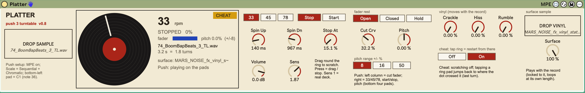
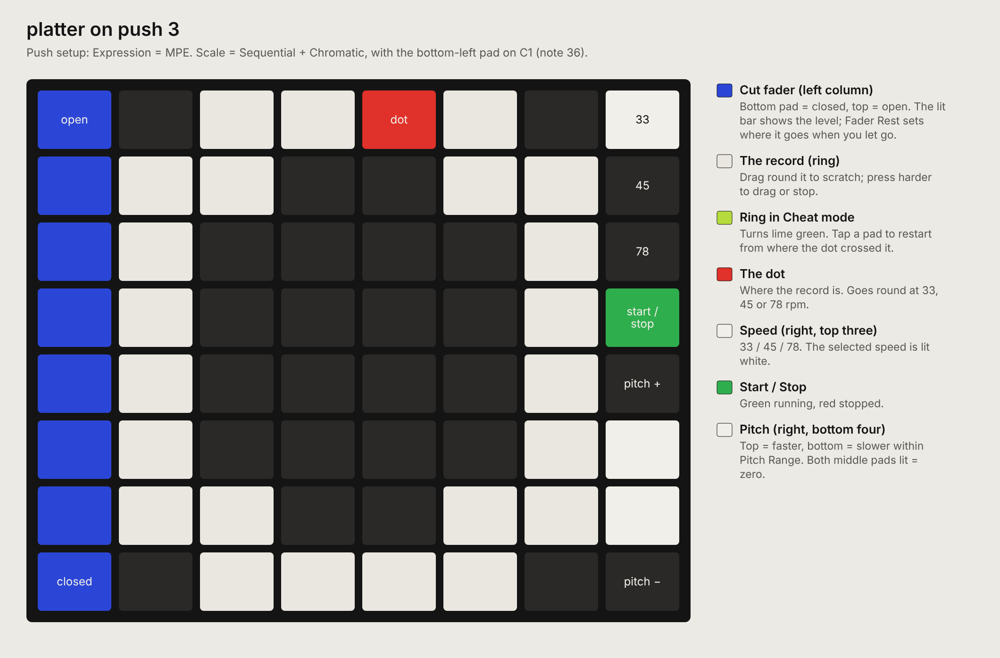

33
platter
Push 3's pads as a turntable: scratch a sample round a ring of pads, with a cut fader, pitch, motor, vinyl surface noise and a cheat mode.


about
Drop a sample on Platter and it becomes a record on a motorised deck. Push 3's pads show the record as a 24-pad ring with a red dot going round at 33, 45 or 78 rpm. Drag a finger round the ring to scratch, forwards or backwards at any speed; press harder to drag the record or stop it; let go and the motor brings it back up to speed. The left column is a cut fader and the right column holds speed, Start/Stop and pitch. Surface noise lives on the record itself, so it slows, stops and scratches with it. Cheat mode swaps scratching for instant jumps back to where the dot crossed a pad.
- type
- instrument
- built by
- claude
- state
- v1.0 — complete
- folder
- Platter Device
quick start
- 01On Push: Setup > Expression = MPE. Scale > Sequential (leftmost encoder) and Chromatic (leftmost lower button). Use Octave so the bottom-left pad plays C1 (note 36).
- 02Put
Platter.amxdon an empty MIDI track and drop a sample on DROP SAMPLE. - 03Select the track so Push is in Note mode: the ring lights, with the red dot going round.
- 04Drag round the ring to scratch. Press harder to drag or stop the record; let go and it spins back up.
- 05Optional: drop a vinyl crackle recording on DROP VINYL for real surface noise.
- 06To keep what you play, record Platter's output onto another audio track.
controls
on the pads
See the pad map below. The device only lights the pads while its track is selected and Push is in Note mode.
- Ring24 pads, middle 6 columns
- The record. Drag round it to scratch; one lap = one turn of the record at Sensitivity 1. Finger position within each pad is tracked, so movement is smooth.
- Pressure on the ringlight - firm
- A still finger drags the record: a light touch slows it a little, firm pressure (Stop Press) stops it, with a short wind-down. A moving finger always grips.
- Left columncut fader
- Bottom pad = closed, top pad = open; slide within a pad to fine-tune. The lit bar shows the level.
- Right column, top three33 / 45 / 78
- Record speed. The selected speed is lit white.
- Right column, 4th padStart / Stop
- Motor on or off. Green running, red stopped.
- Right column, bottom fourpitch fader
- Top = faster, bottom = slower, within Pitch Range. Small catch at zero; both middle pads lit = zero. Holds where you leave it.
deck
- DROP SAMPLEWAV / AIFF
- The record. Plays at its own pitch at full speed and wraps round at either end.
- Speed33 / 45 / 78
- How much audio passes per turn (1.8 s / 1.33 s / 0.77 s) and how fast the dot goes round. Pitch is unaffected.
- MotorStop / Start
- Stop lets the record coast down.
- Spin Up10 - 5000 ms, default 400
- Time from standstill to full speed.
- Spin Down50 - 15000 ms, default 1800
- Time to coast to a stop with the motor off.
- Stop Press10 - 100 %, default 80
- Pressure needed to stop the record dead.
- Sensitivity0.25 - 4, default 2
- How far the record moves per finger movement. 1 = a real deck.
- Pitch-50 - +50 %
- Motor speed, like a pitch slider.
- Pitch Range8 / 16 / 50
- Span of the pitch pads, +/- %.
- Volume-70 - +12 dB
- Output level.
fader
- Fader RestOpen / Closed / Hold
- Where the fader goes when you let go. Open: tap low to cut. Closed: tap up to open, for chirps and transformers. Hold: stays put.
- Cut Curve0 - 98 %, default 85
- How early the sound is fully in. 85 = a sharp scratch-mixer cut-in; lower it for a gradual fade.
vinyl and cheat
All surface noise is addressed by the record's own position, so it slows, stops, rewinds and scratches with it.
- Crackle0 - 100 %, default 30
- Generated ticks and pops.
- Hiss0 - 100 %, default 15
- Generated surface hiss.
- Rumble0 - 100 %, default 30
- Motor rumble, 33 Hz hum plus low noise; fades with Start/Stop. Needs headphones or monitors to hear.
- DROP VINYLany length
- Your own crackle recording. Locked to the record and looped at its own length.
- Surface0 - 100 %, default 50
- Level of the DROP VINYL recording. Set Crackle and Hiss to 0 to hear only your recording.
- CheatOff / On
- Scratching is switched off and the ring turns lime green. Tap a ring pad and playback restarts instantly from where the audio was when the dot last crossed that pad (always within the last turn), with no rewind sound.
push 3
encoders read left to right. slots marked “–” are intentionally empty.
workflow
start with sensitivity 2
A real deck (1) asks for long drags; 2 makes scratches and rewinds easy while keeping fine control.
cuts and chirps
Set Fader Rest to Closed and tap the upper fader pads in time with a scratch for chirps; leave it Open and tap the bottom pad for transformer-style cuts.
cheat mode as a sampler
With Cheat on, tapping just behind the dot re-triggers the last fraction of a second. Chasing the dot round the ring makes stutters and repeats a real deck can't.
gotchas
- Push must be set to MPE, Sequential + Chromatic, with the bottom-left pad on C1 (36). In any other layout the pads map to the wrong places; the device shows a layout warning on its face.
- The pads only light while Platter's track is selected and Push is in Note mode, so other tracks' pads are left alone.
- Cheat jumps land on where the dot crossed the CENTRE of a pad: 24 points per turn, about 75 ms apart at 33.
- The generated vinyl noise is written when the device loads; Live may hitch briefly. The Max window then says "vinyl noise table ready".
rebuilding
python3 build_platter.py in the device folder rebuilds Platter.amxd, frozen, with both js files embedded. Engine: platter_engine.genexpr (gen~). Pads, touch and lights: platter_ctl.js. Face: platter_face.js.
Platter Probe.amxd is the test device that found the route: paint the pads via the control surface without grabbing them, and read the fingers as MPE notes. The README in the folder records every finding and version.